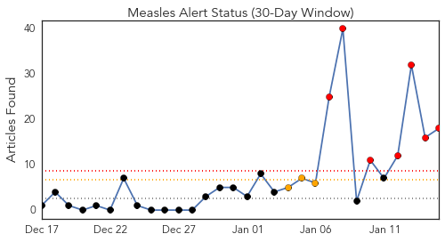
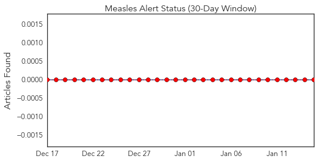
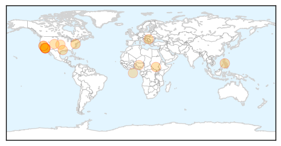
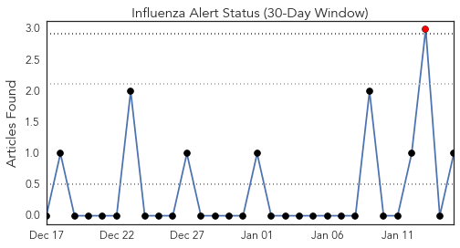
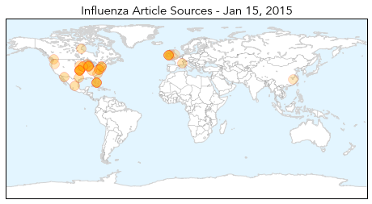

Measles
30-Day Web Trend
7 alerts, 3 warnings

30-Day Twitter Trend
0 alerts, 0 warnings

Article Locations
Article Confidences
Top Articles:
- 0.994
- Latest measles case raises questions, and we have some answers
- 0.984
- Measles Cases Connected to Disney Theme Parks Mounting
- 0.960
- Fauci: Measles outbreaks not uncommon in U.S.
- 0.959
- 32 Confirmed Cases of Measles Linked to Disney Parks
- 0.945
- The California Measles Outbreak and the Least-Happy Debate on Earth
- 0.923
- Epidemic of measles in Belgrade officially confirmed
- 0.915
- US officials try to contain measles outbreak that started at Disneyland
- 0.902
- Sharp Health Care closed due to Measles Scare
- 0.873
- To Vaccinate Or Not Vaccinate « CBS Minnesota
- 0.871
- 13 more California measles cases tied to Disney outbreak
- 0.855
- 10 local confirmed cases of measles related to Disneyland outbre
- 0.837
- Disneyland measles outbreak largest in California in 15 years
- 0.799
- Urgent Care in La Mesa Open Following Measles Scare
- 0.758
- Measles infections soar, doctors urge vaccinations
- 0.732
- Adamawa IDPs’ Camps Record Outbreak Of Measles
- 0.674
- Exposure period for measles over, state health officials say
- 0.638
- San Diego now has 10 measles cases, nine of them unvaccinated children, officials say
- 0.604
- South Pasadena Woman Could Be Jailed For Refusing Measles Quarantine
Top Tweets:
-
No tweets found for Jan 15, 2015
Influenza
30-Day Web Trend
1 alerts, 0 warnings

30-Day Twitter Trend
0 alerts, 0 warnings

Article Locations
Article Confidences
Top Articles:
- 1.000
- DOD offers reminders of flu dangers
- 0.999
- Vaccinations lack efficiency in battling flu season strains nationally, locally
- 0.999
- The Marysville Advocate: News
- 0.999
- Flu hits hard in Iowa
- 0.998
- Death toll from flu in Delaware continues to climb
- 0.997
- Protect yourself from the flu
- 0.996
- North Carolina flu deaths increase to 90; vaccine only 23 percent effective
- 0.994
- Flu threat expected to continue
- 0.991
- Flu shot just 23 percent effective: US
- 0.991
- Flu shot just 23 percent effective
- 0.989
- CDC: Flu shot only 12 percent effective for adults
- 0.988
- HSE admits flu vaccine is for different strain than the one that has hit Ireland
- 0.987
- Province OKs 30 new patient beds to battle spread of influenza, jammed up emergency rooms
- 0.986
- CDC: Flu vaccine is only 23 percent effective this season
- 0.983
- Flu vaccine less effective this year
- 0.983
- More than three quarters of U.S. flu shots ineffective-report
- 0.983
- More than three quarters of U.S. flu shots ineffective-report
- 0.980
- Flu strain in Wisconsin contributes to at least 3 deaths
- 0.976
- Flu shot just 23 percent effective: US
- 0.962
- Number of flu cases to rise in the Midlands
- 0.950
- More than three-quarters of this year's flu shots were ineffective
- 0.945
- Mac researchers may have found a way to outsmart the flu virus
- 0.931
- New strain of flu which can BEAT vaccine on its way to Ireland
- 0.914
- Siouxland schools report low numbers of influenza cases
- 0.910
- One Punch to Knock Out the Flu
- 0.909
- Officials monitor flu outbreaks at Iowa care centers
- 0.903
- Mutant strain of flu virus latest threat to A&Es
- 0.896
- 'Single punch' universal flu vaccine comes closer to reality
- 0.889
- No new avian flu cases reported in province
- 0.887
- 'Single punch' universal flu vaccine comes closer to reality , AniNews.in
- 0.881
- Ozaukee County toddler is third flu-related death in Wisconsin
- 0.859
- A 26-Year-Old Newlywed Suddenly Died Days After Getting the Flu
- 0.843
- Could genetically engineered chickens reverse the avian flu epidemic?
- 0.771
- KATU.com - Portland News, Sports, Traffic Weather and Breaking News - Portland, Oregon
- 0.744
- Avian Flu Scan for Jan 15, 2015
- 0.708
- The Chosun Ilbo (English Edition): Daily News from Korea
- 0.652
- Vaccine offers less protection against flu
- 0.598
- Minister for Health warns flu outbreak to impact on trolleys
Top Tweets:
- 0.589
- RT: Zhejiang Province reported a new human case of H7N9 avian influenza virus infection (CNNB, ... http://t.co/Dgp4ep…